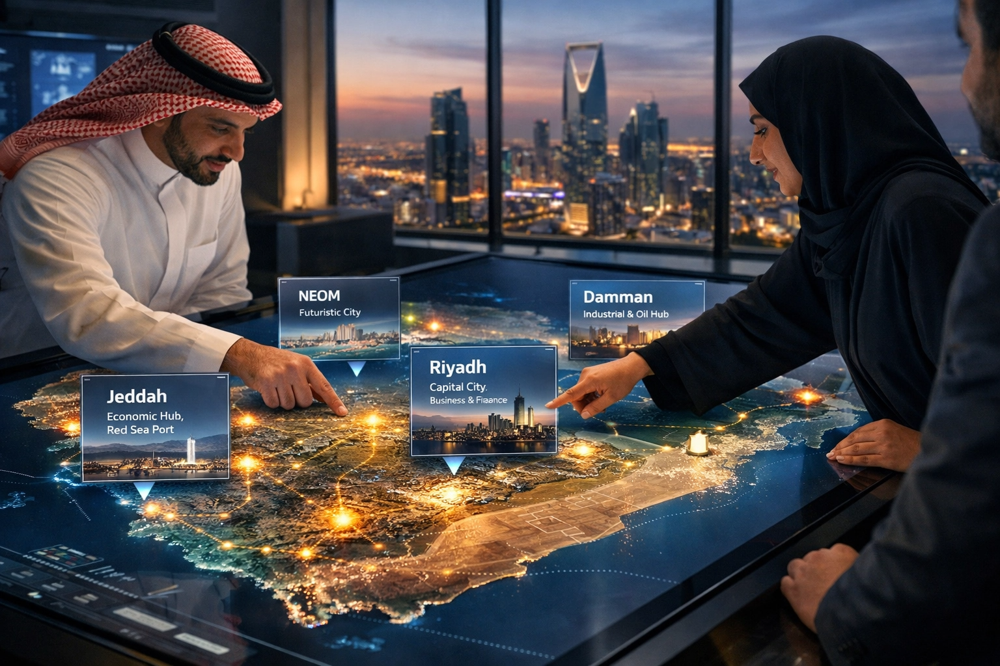
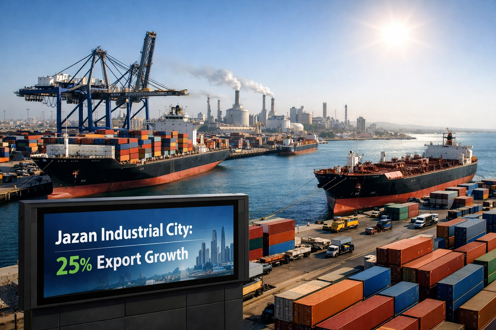

منصة المدن الصناعية
منصة متكاملة تجمع معلومات شاملة عن المدن الصناعية السعودية، وتربط المستثمرين بالفرص الصناعية الواعدة التي تدعم تحقيق مستهدفات رؤية 2030.
منصة متكاملة تجمع المعلومات والبيانات والأدوات التفاعلية لمساعدتك في اتخاذ قرارات استثمارية مدروسة
استكشف مواقع المدن الصناعية على خريطة المملكة التفاعلية مع تفاصيل كل مدينة
بيانات ومؤشرات اقتصادية شاملة تعكس أداء القطاع الصناعي ومساهمته في الناتج المحلي
قارن بين المدن الصناعية المختلفة وفق معايير متعددة لاختيار الأنسب لمشروعك
أداة ذكية تساعدك في تحديد المدينة الصناعية الأنسب لطبيعة مشروعك واحتياجاتك
اكتشف الفرص الاستثمارية المتاحة في المدن الصناعية مع تفاصيل الحوافز والمزايا
رحلة تاريخية في مسيرة التطوير الصناعي السعودي من 1975 حتى رؤية 2030
تعرف على القطاعات الصناعية الرئيسية وأبرز الشركات العاملة في كل قطاع
تتبع مستهدفات رؤية 2030 الصناعية ومدى تقدم المملكة في تحقيقها
تضم المملكة العربية السعودية شبكة من المدن الصناعية المتطورة تمتد من الشمال إلى الجنوب
تُشكّل المدن الصناعية ركيزة أساسية في تحقيق مستهدفات رؤية المملكة 2030 للتنويع الاقتصادي
مضاعفة مساهمة القطاع الصناعي في الناتج المحلي من 12.5% إلى 25% بحلول 2030
رفع قيمة الصادرات غير النفطية إلى 500 مليار ريال سنوياً
رفع نسبة السعودة في القطاع الصناعي إلى 60% وخلق 1.5 مليون وظيفة جديدة
استقطاب استثمارات أجنبية بقيمة 300 مليار ريال في القطاع الصناعي
تتنوع الصناعات في المدن الصناعية السعودية لتشمل قطاعات استراتيجية متعددة
تفاعل مع خريطة المملكة العربية السعودية واكتشف مواقع المدن الصناعية. اضغط على أي مدينة لعرض تفاصيلها الكاملة من صناعات وخدمات ودور في رؤية 2030.
اضغط على أي نقطة لعرض تفاصيل المدينة
فلتر المدن حسب نوع الصناعة أو المنطقة

تابع آخر المستجدات والتطورات في القطاع الصناعي السعودي
أعلنت هيئة المدن الصناعية عن إطلاق حزمة مشاريع استثمارية ضخمة في مدينة الجبيل الصناعية...
أطلقت وزارة الصناعة مبادرة شاملة لتحويل المدن الصناعية إلى مراكز للتصنيع الذكي...

سجلت المدينة الصناعية في جازان أرقاماً قياسية في الصادرات مدفوعةً بتطوير مجمع جازان الاقتصادي...
اكتشف الفرص الاستثمارية المتاحة في المدن الصناعية السعودية وابدأ رحلتك نحو النجاح الصناعي